:::callout{theme="warning" title="Sunset"} Use Cases is in the sunset phase of development and will be deprecated at a future date. Full support remains available. We recommend using Portfolios moving forward for organizing Projects. :::
The Use Cases application allows builders to organize their work within a single operational interface. By combining the filesystem view with an Ontology management view, developers can access a curated view focused on the work for which they are responsible.
The Use Cases application can use any project as its backing project, but works best when backed by a workflow Project as part of the recommended pipeline Project structure. The workflow projects are used to store applications such as those from Workshop and Quiver which are based on Ontology resources.
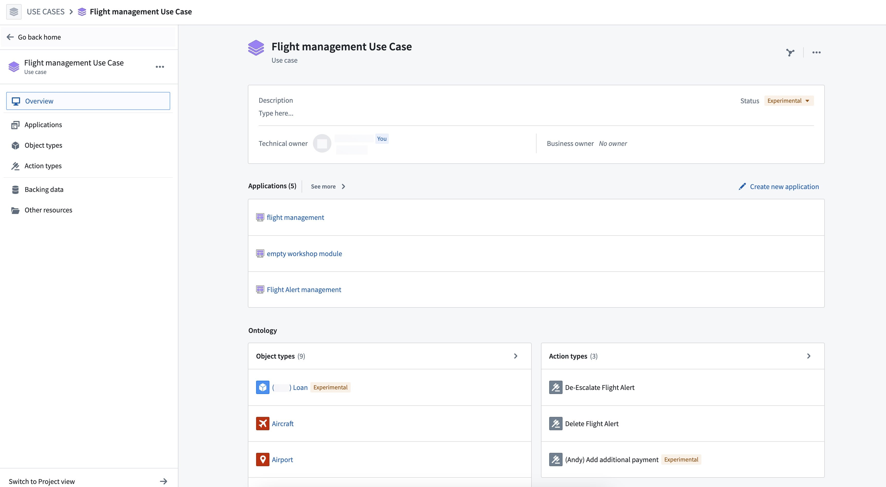
The Use Cases applicationâs key features allow users to:
The Use Cases application is ideal for workflow builders working with the Foundry Ontology to create real-world, operational applications. It is particularly useful for builders moving between different Projects to access resources necessary for multiple types of applications.
If you are new to the Use Cases application, we recommend exploring the following documentation to learn more about navigating the space and getting started with your first use case.
This section shows the full list of your use cases, tagged with Active, Experimental, and Deprecated statuses. Click on a use case to explore more details on its overview page.
You can also choose to start a new use case from here. Select + Create new to the right of the screen to open the + Create use case modal.
Learn more about creating a use case.
When you open a use case from the home page, you will find details related to that use case in the Overview page and a section sidebar to the left that opens pages connected to the sections of the overview. These sidebar sections include:
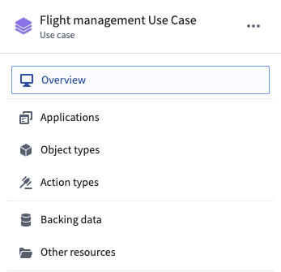
In your use case overview, you can find a summary of Foundry resources related to the use case you created. With these resources, you can create workflows based on Ontology entities or application outputs.
The use case overview also provides quick metadata of your use case, including the description, status, and owners.
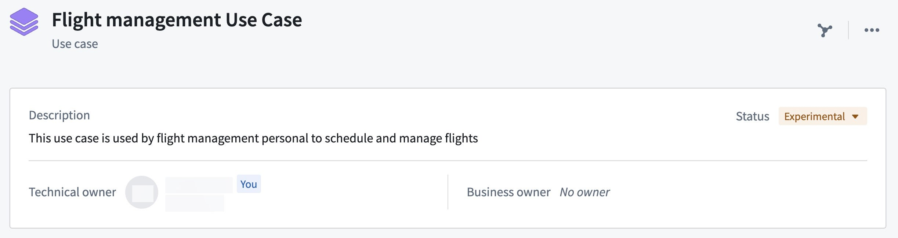
Learn more about editing metadata for your use case.
In the Applications section, you can find the last three applications you edited and a link to a page that lists all connected applications.
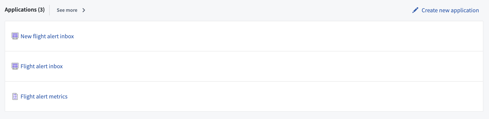
Click Create new application in the upper right of this section in the overview page to open the Create new application modal.
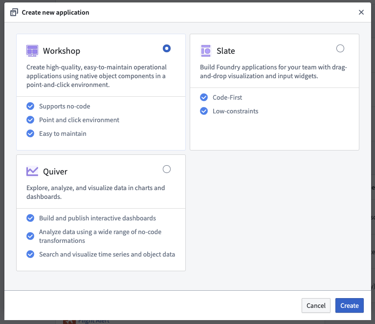
Learn more about adding applications to your use case.
You can also click on Applications in the sidebar to open the Applications page to view a full list of connected applications.
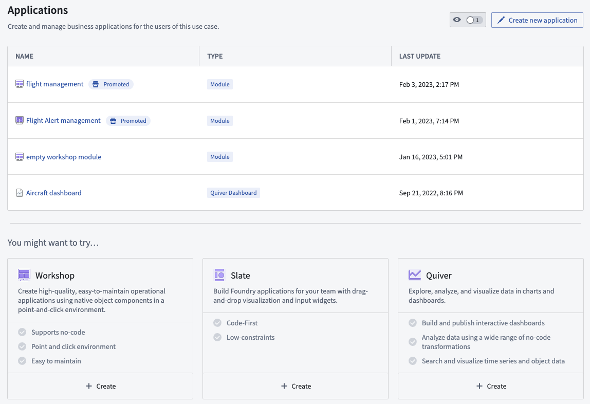
The Ontology section of your use case overview contains two subsections: object types and action types.
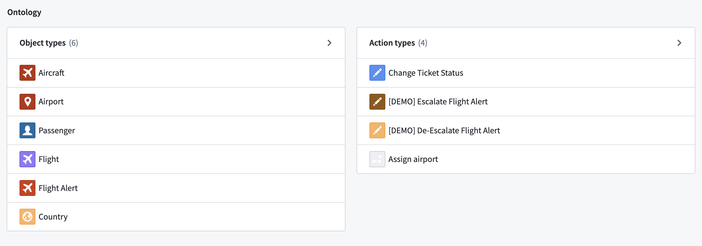
Object types: The object types in the use case view are either used by various applications in the use case or were added manually to the use case.
Action types: The action types in the use case view are either used by various applications in the use case or were added manually to the use case.
Select Object types in the sidebar to open a list of all object types used by applications in the use case or object types that were added manually.
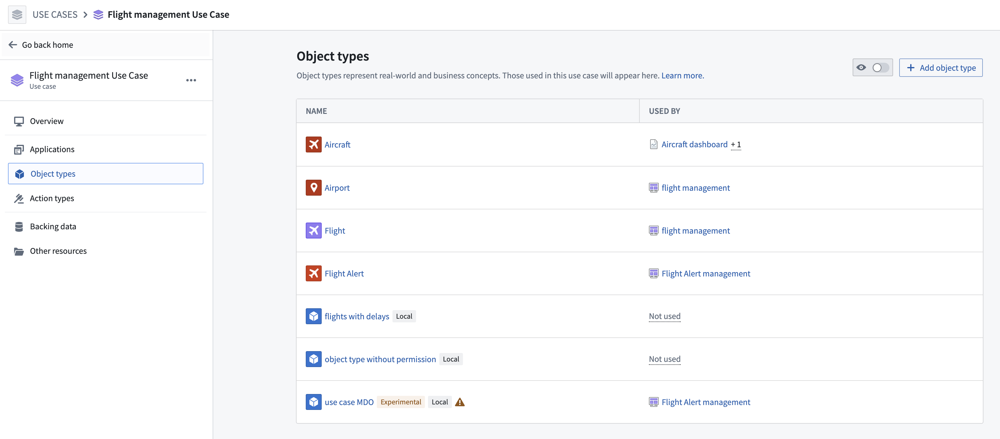
Click on Action types in the sidebar to view a list of action types used by applications in the use case or action types that were added manually to the use case.
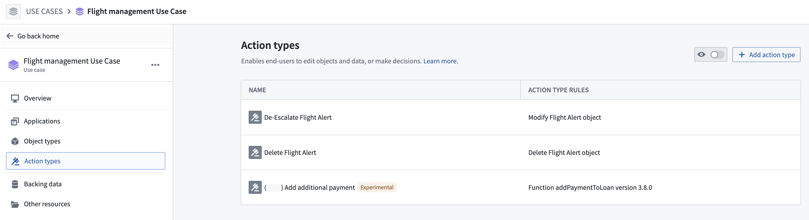
Select the Backing data page from the sidebar to view the full list of data sources by object type. For each object type, you can view the list of input datasources and the writeback dataset, if one exists.
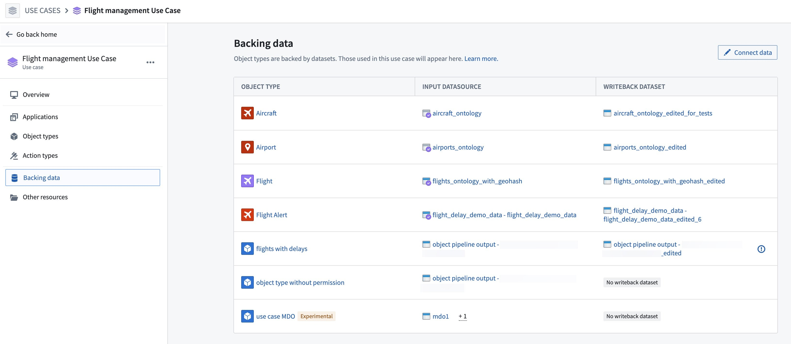
Select Other resources on the left sidebar to view a list of all other resources present in the backing Project.
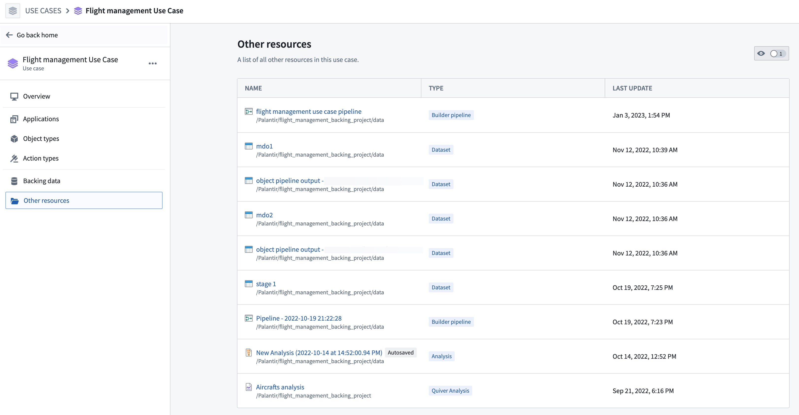